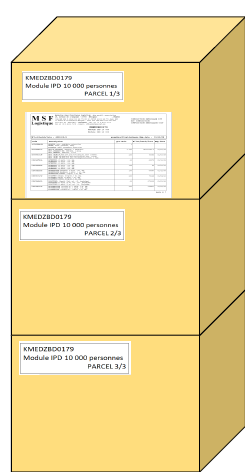
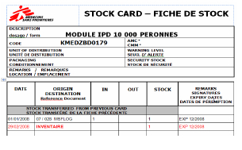

202009-OCP-DOC-001-FR-Stock prépositionné
Abbreviations :
COMED = Coordinateur Médical
EPRED = Emergency Preparedness
MSL = Liste Médicale Standard
MAP = Mise A Plat
SR = Stock Régulier
Qu'est-ce qu'un stock pré-positionné ?
C’est un stock d’urgence qui :
est latent dans le stock mais doit toujours être prêt à être utilisé ou distribué / expédié.
est géré, le plus souvent, sous forme de kits.
ne fait pas parti du stock régulier pour mener à bien les activités de routine / régulières.
La gestion des stocks pré-positionnés demande autant d’attention que la gestion du stock régulier.
Peut correspondre :
À un stock EPREP (Emergency PREparedness Plan)
À un stock Plan Blanc / MCP (Mass Casualty Plan)
Pour EPREP:
Selon le contexte et le scenario, il n’est pas obligé que ce stock de réponse à une urgence soit pré-positionné.
La réponse à une urgence est globale, elle requiert des stocks médicaux mais aussi logistiques ainsi que des moyens humains et financiers.
Pour cela le EPREP aura un code projet séparé, en permettant de faire porter les coûts des Eprep sur l’enveloppe des urgences (cohérence) ; de ne pas faire porter des coûts fluctuant sur les coordinations ; une meilleure visibilité « tous pays » et renforcera la discussion autour des scénario.
Quand ce stock fait partie de la stratégie EPREP, le propriétaire et responsable est le COMED. S’il est positionné en dehors de capital (sur un projet), le COMED peut déléguer cette responsabilité au Référent Médical Projet.
Voir aussi : Plan de préparation aux urgences - E-PREP et Synthèse Articles E-Prep OCP (Médical et Non Médical) disponibles à
Toolbox Logistic WPlace 🡺 1_Gestion logistique des projets 🡺 RÉPONSES AUX URGENCES 🡺 E-PREP
https://mymsf.org/jcms/prod2_530874/fr/e-prep
Si possible, pour les réponses aux urgences, un membre de l’équipe pharmacie sera identifié et détaché sur cette réponse afin de s’assurer que les bases soient bien mises en place en attendant la définition des besoins RH (et l’éventuelle arrivée de support).
LISTE MEDICALE STANDARD (MSL) DU STOCK DE REPONSE AUX URGENCES
Avant de définir la liste standard il est nécessaire que la coordination (et projet ?) et la cellule déterminent les scenarios auxquels la mission veut être capable de réagir et le niveau d’intervention. Ensuite, le COMED et le pharmaco définissent la MSL suivant le contexte / les scenarios / les activités / les protocoles. La MSL doit être validée par le MedCell comme toute MSL de projet.
Cette liste doit être revue par la coordination après la MAP de la mission et avant le budget. Il est proposé d’organiser avant les Commissions Budgétaires de Novembre des mises en commun d’informations entre Cellules Urgences et régulières pour l’état des lieux des Eprep Pays (scenarios, inventaires et budgets sont indispensables).
Les stocks pré-positionnées sont souvent composés de kits/modules standards dont la composition peut elle-même évoluer dans le temps (les nomenclatures sont régulièrement revues) 🡺 Vérifier à l’aide du dernier catalogue MSF des kits (catalogue mauve) et Summary of changes (ou également au catalogue de MSF Logistique qui détail le contenue de kits fournis par eux.
CONTENU D’UN STOCK PRE-POSITIONNE
Le contenu est la combinaison de la MSL et des quantités à stocker pour chaque article. = liste E stock
Ce contenu est défini et révisé annuellement par le propriétaire en accord avec son référent :
Référent Médical Projet avec son CoMed.
CoMed avec son MedCell Comme toute Liste Standard de projet.
Les quantités doivent être conformes au volume de l’activité (N° de lits ; N° de consultations/patients, etc.) et à la durée de l’intervention. Attention, le stock NE DOIT PAS couvrir la durée de toute l’urgence / intervention, seulement son début jusqu’à l’arrivée de la première commande urgente. Cette durée peut varier selon le pays et le processus d’importation (facilité si l’état d’urgence national est déclaré). Il faut éviter d’avoir un stock trop important compte tenu des difficultés de gestion et du risque de pertes.
La logique est identique pour les stocks tampons, la quantité doit être en lien avec le Délai d’Approvisionnement. Il est inutile et risqué d’avoir un stock tampon de 6 mois si MSF Logistique est capable d’assurer une livraison en 2 mois par exemple.
STOCKAGE ET OUTILS DE GESTION
STOCKAGE DES STOCKS DE PREPARATION AUX URGENCES

Les entreposer dans un endroit séparé / nommé et facilement accessible.
Les identifier d’une façon claire et visible (MSF code + libellé).
Si un Kit ou module est composé de plusieurs cartons:
Les garder ensemble.
Les numéroter (carton 1/3; 2/3; 3/3).
Mettre la packing liste dans une pochette en plastique et la coller en évidence à l’extérieure d’un carton (de préférence le premier).
S’il existe plusieurs Kits identiques :
Les numéroter et les stocker séparément : tous les cartons du kit n° 1 ensemble et tous les cartons du kit n° 2 ensemble.
Il doit exister une packing liste détaillée pour chacun des kits.
Si un kit / module contient des articles de la chaîne du froid, des produits contrôlés (Psychotropes / Narcotiques), produits dangereux :
Coller une étiquette sur le carton sur lequel est collé la packing liste.
« ATTENTION articles de la chaîne de froid, produits contrôlés ou dangereux »
En précisant clairement où les articles sont conservés (réfrigérateur/armoire/palette) et identifiés comme appartenant à tel kit/module.
OUTILS DE GESTION LIES AUX STOCKS PRE-POSITIONNES
Fiche de Stock : une fiche de stock par Kit indiquant la date de péremption la plus proche et l’article concerné.

Classeur des stocks pré positionnés :
Liste théorique à jour des stocks de préparation aux urgences.
Copies des packing listes détaillés de chaque Kit avec les dates de péremption de chaque article.
Un exemplaire vierge de packing liste de chaque Kit (avec du blanc sur les dates).

Ordinateur:
Fichier Excel*1 détaillant le contenu de chaque kit et module avec les dates de péremption de chaque article et la quantité théorique => réapprovisionnement. Penser à utiliser un code couleur pour identifier ;
Les quantités manquantes déjà commandées (en orange),
Les quantités manquantes à commander (en rouge),
Les prépérimés déjà commandés (en orange),
Les prépérimés à commander (en rouge) ; etc.
Ne pas oublier de bien renseigner la signification de chaque couleur.
Un plan sera affiché à la porte de l'entrepôt pour permettre d'identifier facilement la localisation des stocks appartenant à chaque scenario
Logiciel de gestion :
La stratégie d’encodage des stocks prépositionnés dans le logiciel dépendra des scénarios et volume de stock mais toujours on encodera ce stock dans un niveau de stock séparé.
En général pour des stocks importants avec différents scenarios : il est conseillé d’encoder le code / nom du kit, quantité total de kit (même si incomplet) et date de péremption la plus proche. On n’encodera pas les articles du kit/module au détail (déjà détaillé dans Excel et packing listes).
Par contre, pour des petits stocks pré positionnés (souvent au niveau du projet) : il est conseillé d’encoder les articles au détail pour éviter d’avoir un Excel séparé
Avant de changer d’une modèle d’encodage a l’autre contacter Paris Pharma pour vous guider dans le model le plus adapté.
SUIVI
Inventaire
Effectuer un inventaire complet des stocks pré-positionnés au moins tous les 6 mois et avant chaque commande internationale. Si stock prépositioné projet : au moment de l’inventaire pour la commande projet.
Porter attention au bon état des articles sans date de péremption (certains entre eux peuvent facilement s’abimer, il faut aussi penser à les remplacer).
| Suivi de la composition (liste standard + quantités) | Suivi des Dates de péremption |
Les quantités physiques doivent être suivies : Comparaison avec les quantités théoriques afin de connaître / savoir si un kit est complet ou non |
Les dates d’expiration des produits doivent être connues et suivies afin de savoir à l’avance un article va bientôt expirer et donc s’il nécessite d’être : -remplacé (échange / rotation avec le stock régulier) => si article commun aux 2 stocks -proposé en donation & commandé (à l’internationale) => si article non commun avec le stock régulier |
| Si le suivi et la gestion sur fiche de stock & logiciel se font par unité de kit et ou de module : la date d’expiration retenue pour la composition du kit sur la fiche stock correspondante et dans le logiciel est celle de l’item expirant en premier. | => Suivi des dates d'expiration des éléments à l'intérieur des kits & modules : système parallèle |
Rotation des stocks
C’est le seul mouvement ou le FEFO n’est pas respecté
Les articles doivent être remplacés idéalement 7 mois avant leur expiration (pour faciliter leur donation), ou conservés jusqu’à réception du produit de remplacement si la donation n’est pas envisageable.
Article périmant bientôt dans un stock pré-positionné
Article NON commun avec le SR
Article commun avec le SR
- Demande de prêt, d’échange ou de donation auprès des projets réguliers / des autres sections (éventuellement partenaire)
- Commander (Achat local selon le contexte et l’article)
- Après réception, donation de l’item expirant en premier si 6 mois minimum restant & mise à jour par conséquent :
Fiche de stock : changer la date de péremption via un mouvement
-Packing liste : changer la date de péremption du produit
-Logiciel : changer la date de péremption via un mouvement
-Liste E-stock : Changer date de péremption la plus proche
- Si pas de solution, garder l’article jusqu’à date d’expiration (risque des stocks de contingence)
Echange d’article entre le SR & le kit
Mise à jour par conséquent :
- Fiche de stock : changer la date de péremption via un mouvement
- Packing list : changer la date de péremption du produit
- Logiciel : changer la date de péremption via un mouvement
- Liste E-stock : Changer date de péremption la plus proche
Article déjà périmé dans le stock pré-positionné
Article NON commun avec le SR
Article commun avec le SR
- Echange (donation ou prêt) d’article du SR vers kit
- OUT Périmé du stock régulier avec placement en zone « Péremption » et mise à jour fiche de stock et registre des pertes (+ commentaire)
- Puis mise à jour de la date de péremption sur les outils de gestion du kit (Fiche de stock / Packing list / Logiciel / Liste E-stock)
- Eventuellement commande
Demande de prêt, d’échange ou de donation auprès des projets réguliers / des autres sections (éventuellement partenaires)
- Commander (Achat local selon le contexte et l’article) : spécifier que c’est du réapprovisionnement pour le stock pré-positionné.
- Sortir l’article périmé
- Indiquer l’article manquant et « KIT INCOMPLET »
- Echanger au plus tôt possible
- Puis mise à jour de la date de péremption sur les outils de gestion du kit (Fiche de stock / Packing liste / Logiciel / Liste E-stock)
Analyse de la commande : Révision de la liste des Kits d’urgences annuelle se fait au moment des MAP avec le coordinateur médical
Si un stock pré-positionné est incomplet, le propriétaire du stock (Medco) doit décider quels scenarios sont les plus critiques et doivent être en conséquence priorisés
Kit(s) non maintenu
Besoin de nouveau kit
Kit(s) maintenu
Communiquer la liste des kits non maintenu aux autres projets /missions
Suivie des dates de
Péremption*
A commander
Suivie des contenus
-Déconditionner les kits
-Entrer les articles utilisé dans le stock central
-Faire de préférences des donations de kit complet
*Si trop d’articles à remplacer (>40% du contenu par exemple) : commander un nouveau kit / module
complet, ce sera plus simple et même probablement moins chère. Déconditionner l’ancien
à la réception du nouveau.
Une commande ré approvisionnement sera passée tous les 4 - 6 mois pour se procurer les articles manquants ou endommagés et remplacer les articles qui expirent.
Les commandes de ré approvisionnement internationales ou locales doivent être imputées sur le code financier créé pour répondre à cette; si pas de code spécifique créé, se tourner vers Coordinateur Financier pour connaitre celui à utiliser.
Le pharma pays ou Pharmaco est le responsable du calcul des commandes stock pré positionné.
Le pharmacien responsable du suivi du stock pré-positionné est aussi responsable des calculs pour les commandes de réapprovisionnement.
Remplacement des articles pré-périmés qui pourront être donnés (car pas de rotation de stock possible) :
Une commande doit être anticipée de manière à recevoir les produits de remplacement à 7 mois de durée de vie restante afin d’avoir 1 mois pour organiser la donation de produits ayant à minima 6 mois de durée de vie restante.
UTILISTATION
INTERVENTION D'URGENCE
i. Exploration/réponse initiale
1. Pour l'exploration/réponse initiale, le Comed/HoM autorisera le déploiement des kits pré-positionnés : les sorties de stock se feront au kit ou à défaut au conditionnement.
2. Le transport sera organisé par la logistique et les articles seront chargés sous la supervision de l'équipe de la pharmacie. Les packing list doivent être affichées (avec des pochettes plastiques) sur les cartons et peuvent être jointes à la feuille de route au moment du chargement.
3. La sortie sur les outils de gestion se fera sous forme de prêt à l'équipe d'urgence si un code financier pour la réponse a été créé (un certificat de prêt sera nécessaire).
ii. Lancement des activités / Poursuite de l'intervention
S'il est déterminé qu'une intervention soutenue est nécessaire (plus longue/importante que celle déterminée par les kits pré positionnés envoyés), le Comed/HoM communiquera avec l'équipe de pharmacie les besoins supplémentaires à l'intervention (en fonction du scénario)
Le mission pharma /Pharmaco analysera s’il existe la possibilité de donner à l’urgence à partir du stock dormant ou surstock des projets réguliers ou donation autres sections avant de passer une commande.
3. L'équipe de la pharmacie (superviseur, magasinier) est responsable de préparer la livraison. 4. Le mouvement de sortie se fera sous forme de prêt à l'équipe d'urgence (un certificat de prêt sera nécessaire)
iii. Restitution des stocks prépositionnés
1. L'équipe d'urgence devra planifier le remboursement (remplacement des quantités manquants dans le stock pré positionné après s’être assuré de la nécessité du remboursement (et non pas transformation du prêt en don)
2. L'équipe de coordination n'acceptera pas les kits/modules incomplets en tant que restitution, sauf si l'équipe d'urgence démontre qu'une commande a déjà été placée pour une restitution les articles et quantités manquantes. Un certificat de restitution de prêt doit être établi en conséquence
3. Tout autre reliquat de l'équipe d'urgence sera offert comme don à la coordination qui décidera s'il est accepté ou non
UTILISATION DU STOCK PREPOSITIONNE EN CAS EN CAS DE RUPTURE DANS LES PROJET REGULIERS
Il est vivement déconseillé de prendre des articles du stock pré-positionné pour «approvisionner » la pharmacie régulière.
Le stock pré positionné doit toujours être complet, mis à jour et prêt à être utilisé pour toutes interventions d’urgence.
C’est le propriétaire du stock qui prendra la décision de l’utiliser et dans ce cas quel kit/module doit être entamé risque opérationnel moindre)
vous pouvez demander des exemples à ParisPharma↩︎